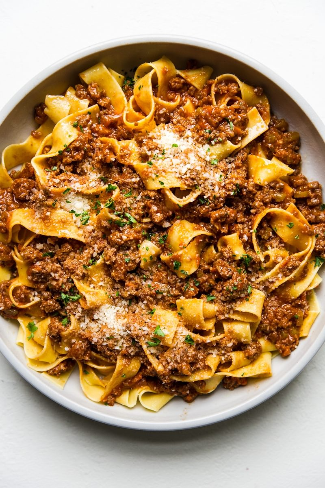

Bolognesse Description
This recipe will show you how to make the most decilious pasta bogolnesse you ever made !
Ingredients:
- 2 Carrots
- 1 Cellery
- 1 Onion
- 1 Cup of Red Wine
- Passata
- Tomato paste
- Extra Virgin Olive Oil
- Fresh Basil
- Salt and Black Pepper
- 100-150 ml Milk
- 1KG Minced Meat(Pork/Beef or combined)
Steps:
- Cut the vegetables into small pieces and put the on plate
- Turn the heat on medium, put the pan and 3/4 tables spoons of Extra Virgin Olive Oil
- When the oil gets hot put in the vegetables and wait for them to soften (Approximately 3-4 minutes)
- After the vegetables have softened put half a glass of the red wine, and wait 3 minutes for the alchohol to evaporate
- It's time to put the minced meat in and turn the heat close to the maximum.Use a spoon to make the minced meat in small bits.Put one table spoon of salt and pepper amount by your choice
- Now we are waiting the water from the minced meat to evaporate and after that we put the other half of the glass wine in. Ofcourse we wait again for the alchohol to evaporate as well.
- Put the tomato passata and one spoon of tomato paste in.Stir for a minute.
- Put 1L of boiling water in and put it to simmir for at least 3 or 4 hours(In the meantime if the water evaporates put a little amount in)
- Bon Appeti!